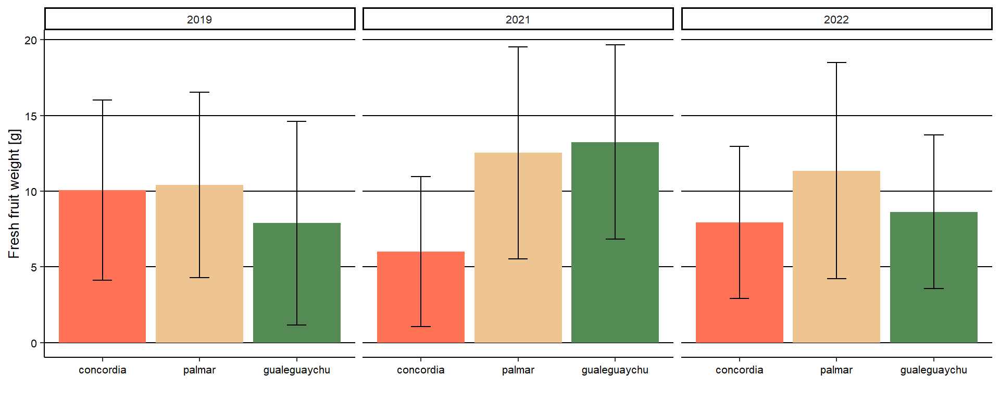
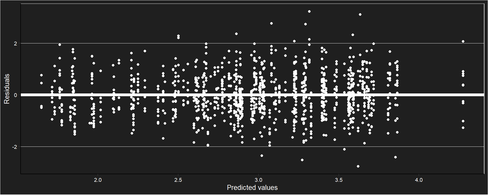
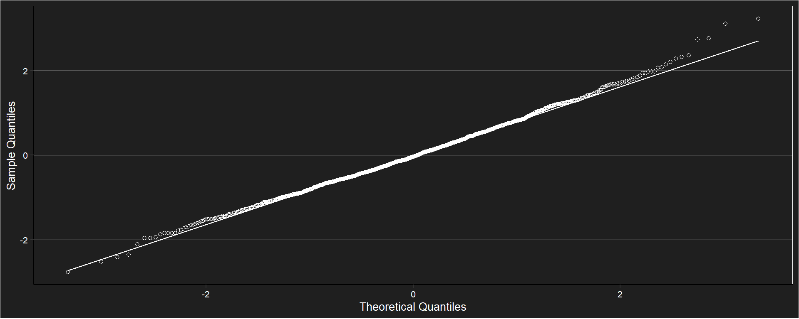

## New names:
## • `` -> `...15`## year site N pff sd se ci
## 1 2019 concordia 160 10.081594 5.943957 0.4699111 0.9280726
## 2 2019 palmar 156 10.405921 6.127587 0.4905996 0.9691242
## 3 2019 gualeguaychu 94 7.889777 6.713651 0.6924602 1.3750888
## 4 2021 concordia 178 6.016247 4.957744 0.3715987 0.7333340
## 5 2021 palmar 171 12.536789 7.001749 0.5354371 1.0569618
## 6 2021 gualeguaychu 164 13.241445 6.419648 0.5012903 0.9898602
## 7 2022 concordia 121 7.943298 5.014442 0.4558584 0.9025679
## 8 2022 palmar 6 11.358500 7.145121 2.9169834 7.4983445
## 9 2022 gualeguaychu 114 8.640035 5.064179 0.4743038 0.9396814

##
## Shapiro-Wilk normality test
##
## data: e
## W = 0.99677, p-value = 0.01722## Type III Analysis of Variance Table with Satterthwaite's method
## Sum Sq Mean Sq NumDF DenDF F value Pr(>F)
## year 2.3521 1.176 2 1133.8 1.6491 0.1927## [1] 64.10432## [1] 29.02108## [1] 6.874606## # Intraclass Correlation Coefficient
##
## Adjusted ICC: 0.359
## Unadjusted ICC: 0.358## [1] 0.3589568